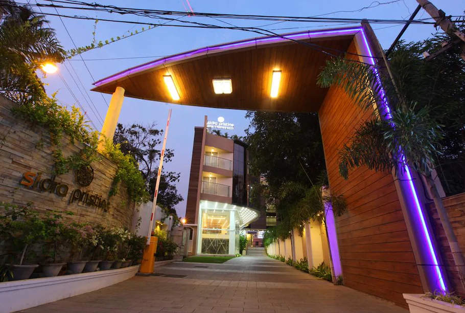

HOTEL AIRLINK CASTLETake a refreshing dip in the rooftop swimming pool. Beautiful woodwork carved out in rooms with a view of swaying palm trees. Gorge on the finest seafood in town at the on-site restaurant.Railway networks, intra-city Metro and all major transport facilities including national highways and waterways are just a stone throws away. The property is situated about 16 miles away from Cochin International Airport (COK). Pick-up or drop services to Cochin International Airport (COK), Railway networks are available at applicable charges. Guests can also choose from various Kochi sightseeing packages the hotel has to offer |
Our price:₹1999 |
|  |
SIDRA PRISTINE HOTELSidra Pristine Hotel & Portico Halls is the best budget facility you can find in Kochi, bringing a dependable experience in every basic necessity you need. Let it be a holiday, a work trip or a random city hoping, Sidra ensures that youre in close proximity with prime shopping destinations, key transportation networks and prominent business establishments. All of our rooms are designed keeping convenience and comfort in focus. If the center of Ernakulam is what you are looking for, we are ideally situated in a silent neighborhood within a bustling city. |
Our price:₹2293
|
Coral Isle HotelWhether travelling for business or pleasureCoralIsle, Cochin aims at making all of your travel successful by providing exactly what you need.Coralisle, Hotel, is located at opposite North Railway station, Cochin. The hotel is structured contemplating the business luxury style without any compromises on technology, hereby making it possible to provide both High Tech amenities and High touch levels of services in the industry. Spread across 05 floors, our 48 rooms are a perfect blend of comfort and functionality.. |
Our price:₹1499 |